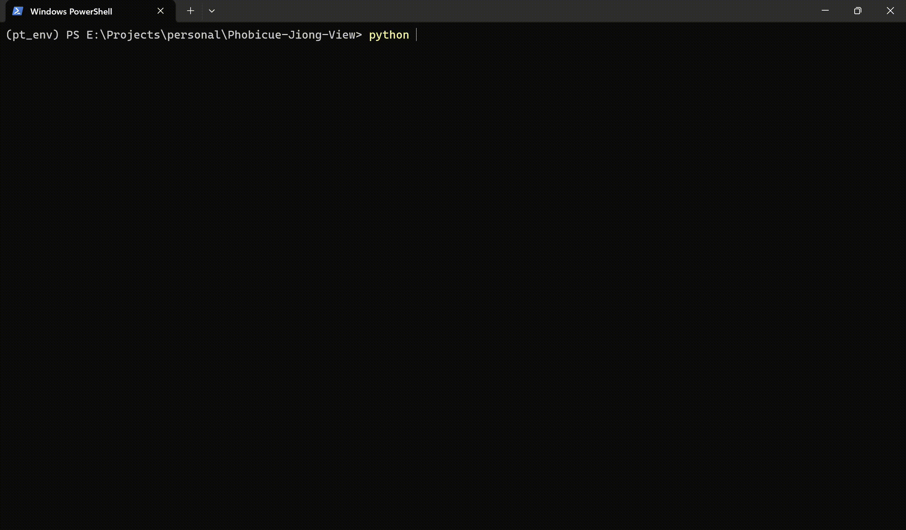
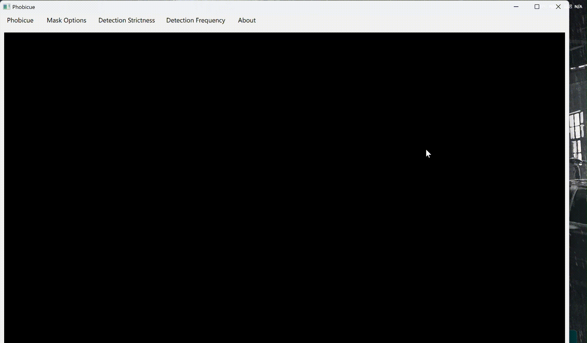
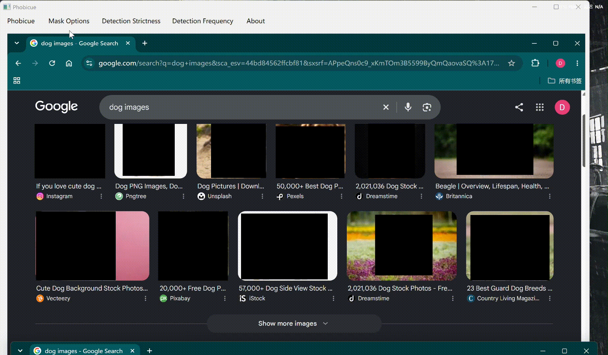
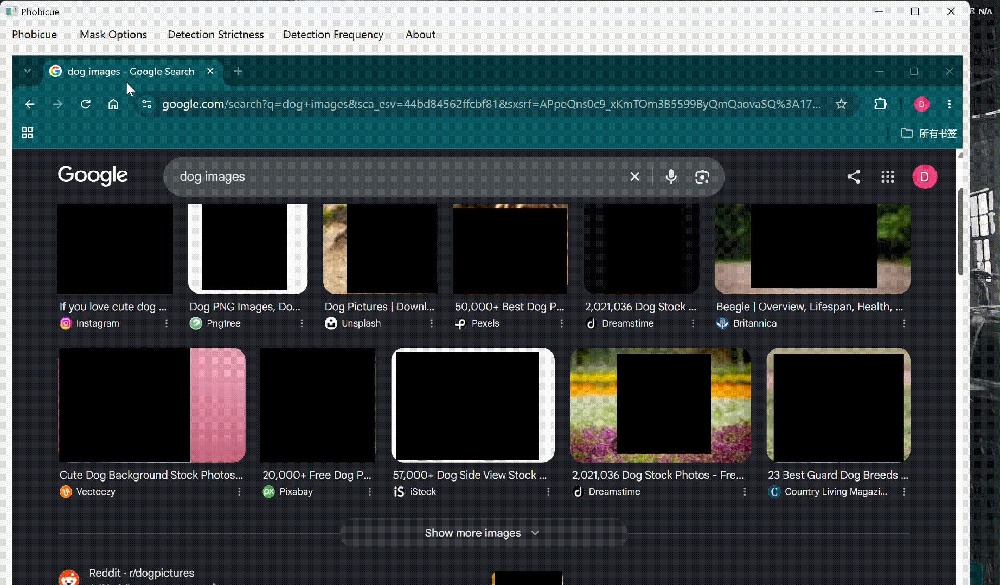
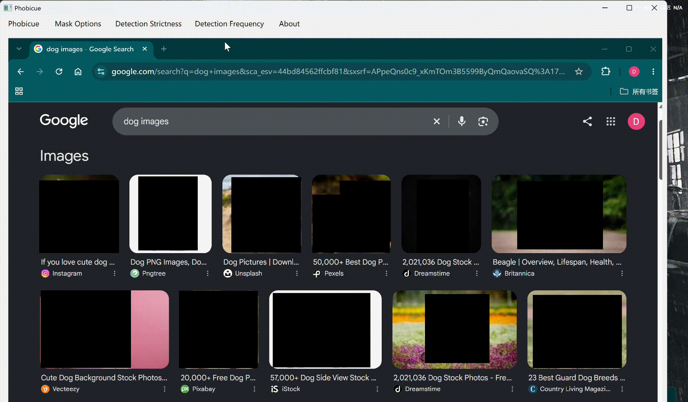

Back <<
Python • Ultralytics YOLO • Object Detection • PyQt6 • python-opencv • Pytorch
• Utilizes python PyQt6 to create a user friendly, interactive window with configurable censorship options, such as customized mask images, detection strictness and detection frequency.
• Obscures detected regions while maintaining user interactions on the original window, using several window APIs.
• Customizable YOLO model files for different user experiences.
• Allows GPU acceleration by integrating Pytorch.
• Windows 10/11
• Python 3.x
• pip
• A trained Ultralytics YOLO Model is recommended.
• A compatible NVIDIA GPU is recommended, but the application can also run on CPU.
To set up Phobicue-Jiong-View visual censor, first ensure you have the required environment and packages. Clone the repository and install the required Python packages:
git clone https://github.com/demingQian/Phobicue-Jiong-View.git
cd Phobicue-Jiong-View
pip install -r requirements.txt
1. Run the application in the environment with required packages. When you see a small window pops up, the prelauncher is ready.
Although the application creates a new window which replicates the original window, you can still use your cursor to interact with the original window! Simply treat the application window as your original window, then click and drag whenever and wherever you wish!
Besides basic cursor functionality, you can also type into the original window, by simply clicking on the textfields in the application window and typing on your keyboard!
Although scrolling is not possible with your mouse scroll, you can press up or down arrow key on your keyboard to scroll up or down.

The application allows user to customize how their censorships should look like when the app is running:
• Disabled: Disables video censorship.
• Black: The default censorship method. Offers the best performance when running.
• Blur: Blurs the detected region.
• Custom Image: The application randomly chooses from the images in the "custom_images" folder to apply to detected regions (ignore my alien cat lol)

The application allows user to choose how strict the detection should be:
• Loose: Detection is loose. The application will flag even the slightest suspicions (false detection may occur).
• Normal: The default detection strictness.
• Strict: The application reports less detection with higher accuracy, at the cost of potential ineffective censorships.
• Very Confident: The application only reports detection only if the model is very confident with the detection.

The application allows user to choose how frequent the application detects every frame:
The recommended option is "Every Frame", which guarantees to censor any detections in any frames as long as the model can detect them. However, too frequent detection may introduce devastating performance issue. Thus, users can choose the app to detect less frequently, at a cost of potential ineffective censorship when the video has rapidly changing frames. The force-detection mechanism forces the app to detect everytime the user interacts with the window, regardless of the current detection frequency setting.
The application offers multiple methods to safely exit the program, by clicking the "Quit" option under the "Phobicue" menu tab or by clicking the "x" button on the top right corner of the window.
https://github.com/demingQian/Phobicue-Jiong-View.git